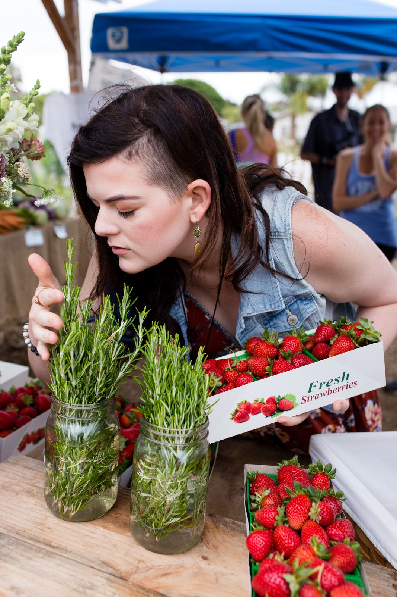
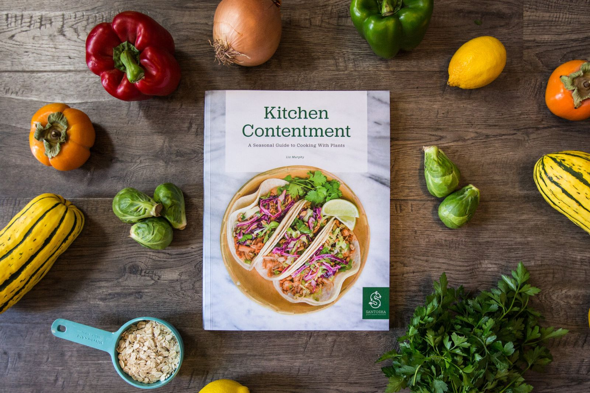
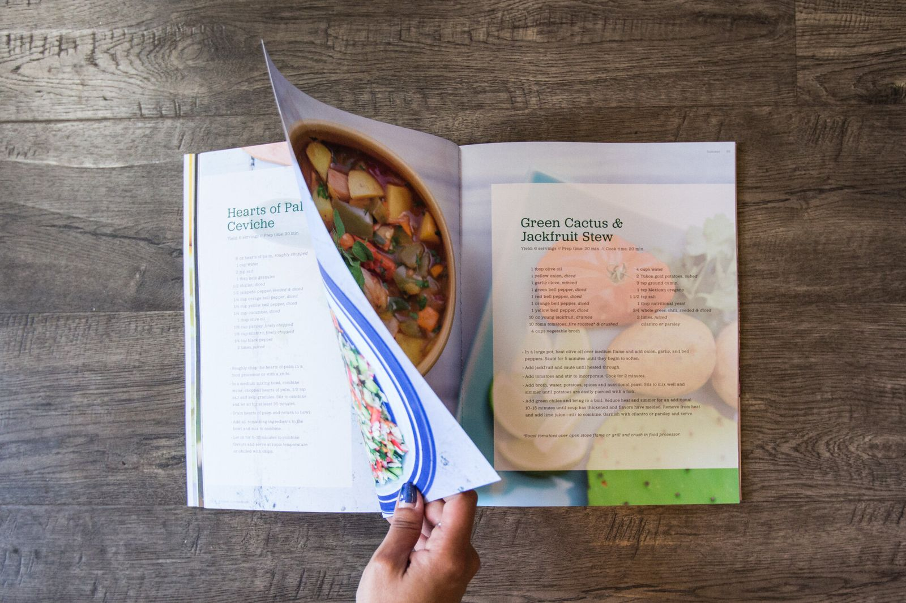
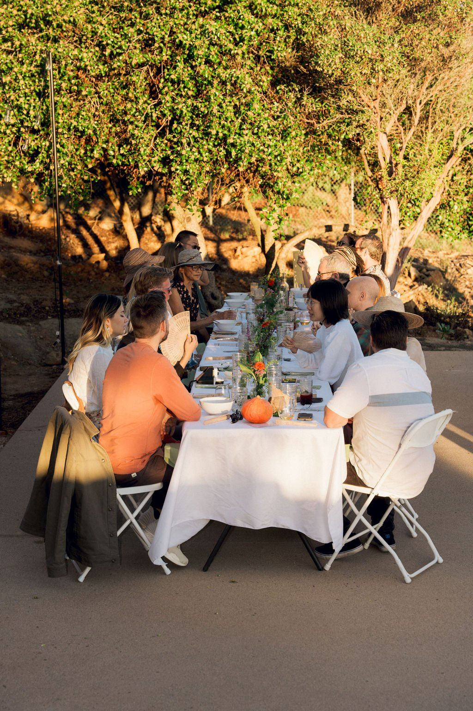

Green Cactus & Jackfruit Stew
Yield: 6 servings // Prep time: 20 min // Cook time: 20 min
As featured in
Ways to work with Liz
From a hands-on class in your own kitchen to a farm-to-table dinner under the trees, every Santosha experience is plant-based, seasonal and made to share.
Eating more plants and fewer animal products is one of the best things you can do for your health and for our planet.
You don’t have to go vegan to start. Liz meets you where you are and helps you find the food choices that are best for you.
Santosha in action
The Santosha team cooking a zero-waste, plant-based menu at the Save the Food Festival. Liz brings the same care to every class and catered event.

Meet your chef
Liz Murphy is a plant-based chef and educator. Years of food allergies and health struggles taught her to use food to heal and nourish, and she has been helping others do the same ever since.
After eight years in restaurants and hotels, and travels through Asia and South America, she founded Santosha on a simple idea: eating more plants can change the world.
Happy clients


Over 50 seasonal recipes
The cookbook
a seasonal guide to cooking with plants
Chef Liz’s plant-based recipes, tips and techniques for cooking with the seasons and supporting local farmers.
$40.00
A peek inside
Yield: 6 servings // Prep time: 20 min // Cook time: 20 min
Yield: 6 servings // Prep time: 30 min
Printed carbon-neutral, in conjunction with the Forest Stewardship Council.
Events
Between public events, Liz brings the farm-to-table experience to your group: a market tour, a hands-on class or a private dinner. Newsletter subscribers hear about new public dates first.
Recent gatherings
